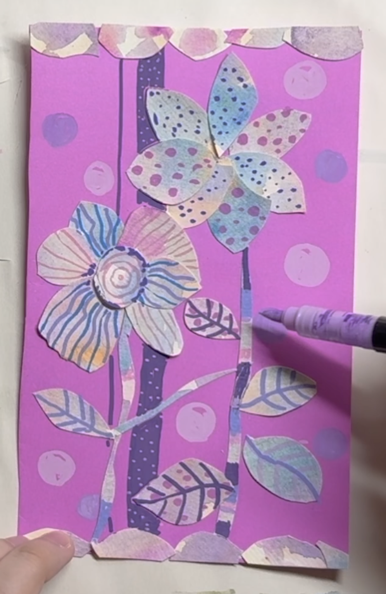

COLOR PRACTICE · OPTIONAL CREATION

Color Bloom Collage
Paint · layer · cut · arrange
BEFORE YOU MAKE
Do you remember these two color relationships?
You may review either skill, or go straight to making if you already understand them.

Paint · layer · cut · arrange
You may review either skill, or go straight to making if you already understand them.